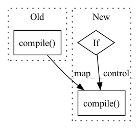

Pattern ID :24426
Before Change
raise Exception("cannot understand %s of type %s" % (state, type(state)))
out = get_layer(x, output_state)
model = Model(inputs=inp, outputs=out)
model.compile(**model_compile_dict)
return model
def build_multi_gpu_sequential_model(model_states, input_state, output_state, model_compile_dict, gpus=4, **kwargs):After Change
raise Exception("cannot understand %s of type %s" % (state, type(state)))
out = get_layer(x, output_state)
model = Model(inputs=inp, outputs=out)
if not kwargs.pop("stop_compile", False):
model.compile(**model_compile_dict)
return model
def build_multi_gpu_sequential_model(model_states, input_state, output_state, model_compile_dict, gpus=4, **kwargs):In pattern: SUPERPATTERN
Frequency: 4
Non-data size: 3
Instances Fragment ID: 75894966
Project Name: zj-zhang/amber
Commit Name: 73c81dbd200901c3c331c930690a128b70e03365
Time: 2020-07-02
Author: zzj.zju@gmail.com
File Name: amber/modeler/_keras_modeler.py
M Class Name: AnonimousClass
N Class Name: AnonimousClass
M Method Name: build_sequential_model(4)
N Method Name: build_sequential_model(4)
M Parent Class:
N Parent Class:
M File Name: amber/modeler/_keras_modeler.py
N File Name: amber/modeler/_keras_modeler.py
M Start Line: 62
M End Line: 62
N Start Line: 62
N End Line: 64
Before Change
def compile(self, **kwargs: kwargus) -> None:
self.permit_train = True
for i in range(self.count):
self.models[i].compile(**kwargs)
def __get_confidence(self, model_index: int, input: NDArray) -> NDArray:
Get the confidence value that is needed by voting.After Change
def compile(self, **kwargs: kwargus) -> None:
self.permit_train = True
for i in range(self.count):
if not self.model_trained[i]:
self.models[i].compile(**kwargs)
def __get_confidence(self, model_index: int, input: NDArray) -> NDArray:
Get the confidence value that is needed by voting. Fragment ID: 75894967
Project Name: tencent-quantum-lab/tensorcircuit
Commit Name: e5adb0465d052ef815fceee5627f915d02755823
Time: 2023-02-26
Author: 78847784+MarkSong535@users.noreply.github.com
File Name: tensorcircuit/templates/ensemble.py
M Class Name: bagging
N Class Name: bagging
M Method Name: compile(1)
N Method Name: compile(1)
M Parent Class:
N Parent Class:
M File Name: tensorcircuit/templates/ensemble.py
N File Name: tensorcircuit/templates/ensemble.py
M Start Line: 61
M End Line: 61
N Start Line: 58
N End Line: 62
Before Change
quant_out = model.predict(inp)
assert not np.array_equal(orig_out, quant_out)
model.compile(optimizer=tf.keras.optimizers.Adam(learning_rate=1e-3),
loss=tf.keras.losses.BinaryCrossentropy(),
metrics=["accuracy"])
starting_weights = [weight for weight in model.layers[1]._layer_to_wrap.get_weights()]
y = np.random.randn(100, 2)
model.fit(x=inp, y=y, batch_size=1)After Change
Test qc quantize layer and param wrapper
if version.parse(tf.version.VERSION) >= version.parse("2.00"):
inp = np.abs(np.random.randn(100, 2))
model = dense_functional()
model.layers[1].set_weights([np.ones((2, 2)), np.array([1.2, 1.5])])
orig_out = model.predict(inp)
replace_layer_in_functional_model(model, model.layers[1], [QcQuantizeParamWrapper(model.layers[1]),
QcQuantizeLayer()])
tf.keras.models.save_model(model, "./data/saved_model", save_format="tf")
model = tf.keras.models.load_model("./data/saved_model")
quant_out = model.predict(inp)
assert not np.array_equal(orig_out, quant_out)
model.compile(optimizer=tf.keras.optimizers.Adam(learning_rate=1e-3),
loss=tf.keras.losses.BinaryCrossentropy(),
metrics=["accuracy"])
starting_weights = [weight for weight in model.layers[1]._layer_to_wrap.get_weights()]
y = np.random.randn(100, 2)
model.fit(x=inp, y=y, batch_size=1) Fragment ID: 75894962
Project Name: quic/aimet
Commit Name: 5da820ff0aa37fd772fb043e1d7fd0927e334513
Time: 2022-01-07
Author: quic_klhsieh@quicinc.com
File Name: TrainingExtensions/tensorflow/test/python/test_qc_quantize_layer_keras.py
M Class Name: AnonimousClass
N Class Name: AnonimousClass
M Method Name: test_qc_quantize_layer_with_param_wrapper_training(0)
N Method Name: test_qc_quantize_layer_with_param_wrapper_training(0)
M Parent Class:
N Parent Class:
M File Name: TrainingExtensions/tensorflow/test/python/test_qc_quantize_layer_keras.py
N File Name: TrainingExtensions/tensorflow/test/python/test_qc_quantize_layer_keras.py
M Start Line: 97
M End Line: 118
N Start Line: 93
N End Line: 115
Before Change
}
exec(compile(module, "", "exec"), namespace)
return Compiler.compile( namespace["compute_pipeline"])
After Change
for op_id, op in enumerate(operations):
func_name = f"pipeline_stage_{op_id}"
code = op.generate_code()
if do_compile:
code = Compiler.compile( code)
functions[func_name] = code
dst_name = f"dest_{op_id}"
arguments.append(ast.arg(dst_name))
body.append(ast.Assign(targets=[ast.Name(id="result", ctx=ast.Store())], Fragment ID: 75894968
Project Name: libffcv/ffcv
Commit Name: 208efa27a6ed0a8563124ea1e14bcc0f5f3f7e59
Time: 2021-10-22
Author: leclerc@mit.edu
File Name: ffcv/pipeline/pipeline.py
M Class Name: Pipeline
N Class Name: Pipeline
M Method Name: generate_composition(3)
N Method Name: generate_composition(2)
M Parent Class:
N Parent Class:
M File Name: ffcv/pipeline/pipeline.py
N File Name: ffcv/pipeline/pipeline.py
M Start Line: 153
M End Line: 187
N Start Line: 153
N End Line: 195